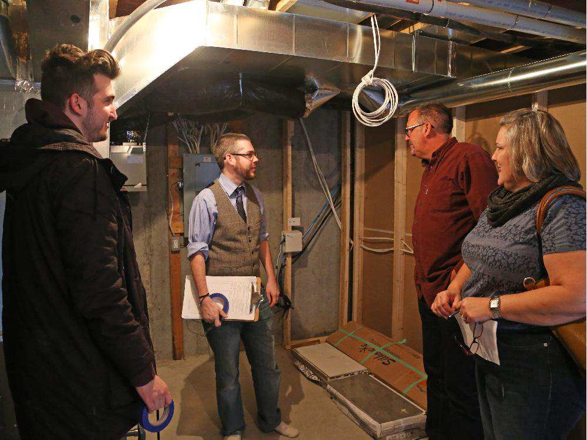
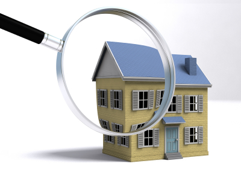
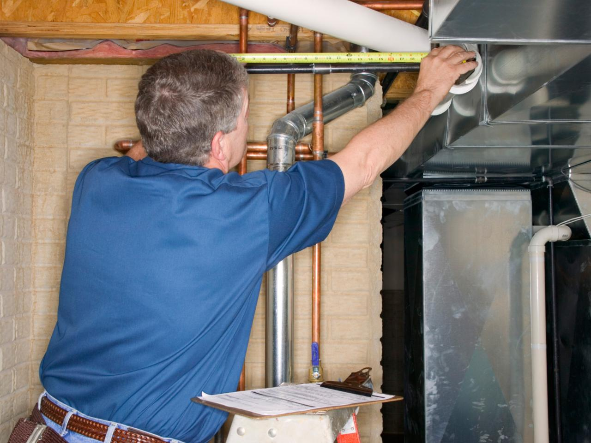

买过新房的房主应该都有过以下两种经历：新房交付前，建筑商通知我，要进行一次房检，也就是新屋交割检验PDI （Pre-delivery inspection）；房子住了快一年了，然后接到了TARION 的信，要求尽快完成一年入住验收报告，即Year-End Tarion Report 。下面陈博士验房先为您简单介绍一下PDI。在下一篇文章里，陈博士再给您介绍 Year-End Report。
什么是PDI
按照Tarion的规定，新房交付前的验房，是建筑商在新房交付前必须提供的一项服务（Tarion: Builder Bulletin 42, Part B）。PDI是由买方或买方的代表在建筑商陪同下，对即将交付的新房做全面的了解，并进行检查验收。
PDI包括：
- 检查新房是否完全按照购房合同中的约定完成;
- 检查所有系统（结构、上下水、通风、供暖、供电等等）是否正常工作；
- 检查房屋内外的装修、设备等有无漏装或损坏；
- 建筑商应向买房介绍新房的使用和保养；
- 双方签署必需的文件。
对购房一方, PDI可能是自签约以来，第一次完整地检查自己买下的这份产业。对建筑商, PDI也许是他们最后一次向客户介绍自己的产品。为了清楚地进行交接，免去后面的一些不必要的麻烦，买卖双方对PDI都不该马虎。
建筑商应该做些什么
建筑商安排好时间，就会通知买方来做PDI。通常，PDI要花两个多小时。到时建筑商会指派验房师和买方一起检查房子，并向买主解释新房中所有系统如何使用和保养，比如取暖制冷装置、上、下水系统、还有电气系统的使用和维护等等。最后，建筑商会要求买方签署签署验收报告，还会为买主提供一份房子的说明，即所谓 Homeowner Information Package。

谁去做PDI
买方可以自己做PDI，可以请指定的代理人。代理人可以是一位验房师，也可以是一位或几位信得过的亲属或朋友。
虽然是可以请人做PDI，买主最好还是能自己到场。因为即使请了一位验房师或工程师，他也不一定清楚您在购房的时候都要了些什么东西，而且，验房师通常只负责检查房子的结构及各个系统是否正常，对一些细节如墙上的划痕、地砖的裂缝等等并不会十分在意。另外，买主也不该错过这个全面了解自己新房的机会。

要不要请验房师
经常听到的说法是，新房都有一年或两年的保修，即使日后发现了问题，建筑商也会负责，所以PDI并不重要，我或找个人随便看看就行了。其实，这严重的忽略了PDI的重要性。

PDI对于买家是一次非常重要的机会。虽然理论上讲所有的房屋质量问题，无论巨细，即使是在入住后的30天内才发现的，建筑商都有责任予以维修，但是早发现问题永远比晚发现要来的主动。PDI中发现的缺陷，因为是在买家入住之前就已经存在了，开发商是无法推卸的。所以，请验房师来做PDI，好处是能够尽早发现问题，尽早解决，避免以后发生不必要的争执，同时也能帮你发现隐藏问题。比如阁楼里的通风是否良好，保温棉是否到达标准，车库门是否满足建筑标准(building code)，接电是否符合电工标准等等。同时，开发商指派的验房师在做PDI时，是对开发商负责的。所以，买方指派自己的验房师一起做PDI,完成表格，应该是明智之举。
在下一篇文章里，陈博士将为您介绍什么是新房一年验收报告？它很重要吗？我应该请验房师吗
版权声明：本网站所有内容，包括文字和音频，版权均属「陈博士验房」所有。任何个人、机构、组织未经本网允许，不得复制、改编、转发本网站内容到任何其它平台，违者将追究法律责任.